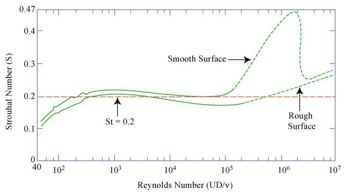
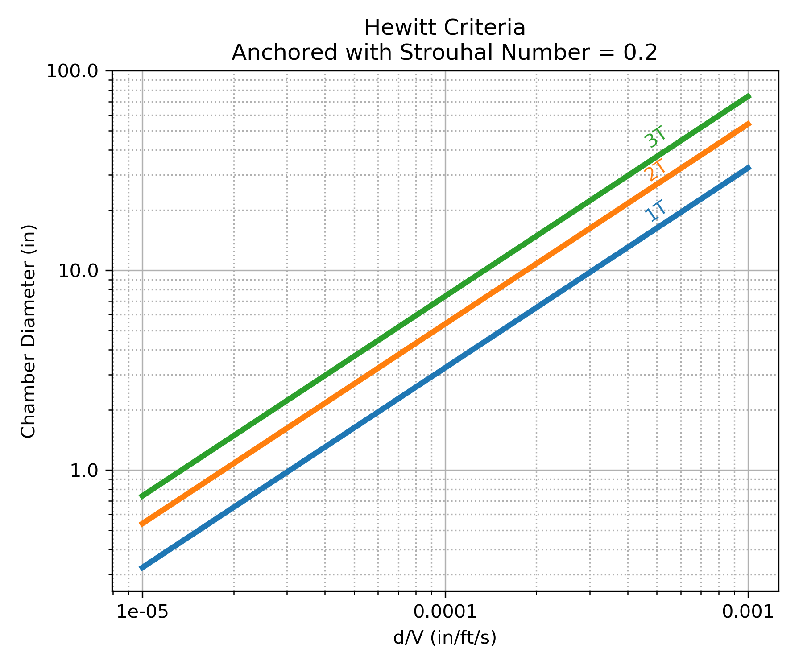

Combustion Stability¶
Combustion stability is an extremely large topic, much too large for RocketIsp to explore in detail.
The paper Liquid rocket combustion chamber acoustic characterization by Rogerio Pirk et al, describes combustion stability as follows.
There are basically three types of combustion instabilities in liquid rocket engines (LRE): low frequency, medium frequency and high frequency. Low frequency instabilities, also called chugging, are caused by pressure interactions between the propellant feed system and the combustion chamber. Medium frequency instabilities, also called buzzing, are due to coupling between the combustion process and the propellant feed system flow. The high frequency instabilities are the most potentially dangerous and not well-understood ones. It occurs due to coupling of the combustion process and the chamber acoustics (Sutton and Biblarz, 2001).
Because Low and Medium frequency instabilities involve the full propulsion system, RocketIsp will not address them. There is, however, a simple first approximation for high frequency combustion instability in liquid/liquid rocket engines, the Hewitt criteria, that is included in RocketIsp.
The Hewitt criteria applies to high frequency combustion instability in rocket thrusters where the chamber pressure oscillates in resonance with the chamber acoustic modes.
Acoustic Modes¶
NASA-SP-194 Liquid propellant rocket combustion instability displays the pressure and velocity profiles of the primary chamber acoustic modes as shown below.

Rogerio Pirk et al give the following equations to calculate the frequencies of the above modes where \(c\) = speed of sound and \(R_c\) = combustion chamber radius.
\(f_{1T} = (1.8412 \; c) / (2 \pi R_c)\) = first tangential mode
\(f_{2T} = (3.0542 \; c) / (2 \pi R_c)\) = second tangential mode
\(f_{1R} = (3.8317 \; c) / (2 \pi R_c)\) = first radial mode
\(f_{2R} = (7.0156 \; c) / (2 \pi R_c)\) = second radial mode
Hewitt Criteria¶
The Hewitt criteria is a simple correlation of several injector and chamber parameters. It relates those parameters to the above acoustic modes in a liquid bipropellant thruster and indicates where instability will likely occur. It also highlights the inherent trade off between high performance and combustion stability.
The following chart, Figure 6 in the Hulka paper, displays the Hewitt criteria.

|
|
References to the Hewitt criteria can be found in Scaling of Performance in Liquid Propellant Rocket Engine Combustion Devices by James R. Hulka, the PDF file: Combustion Instability Phenomena of Importance to Liquid Propellant Engines by R. J. Santoro and W. E. Anderson and Numerical Analysis of Self-Excited Combustion Instabilities in a Small MMH/NTO Liquid Rocket Engine by Jianxiu Qin and Huiqiang Zhang
Simply paraphrased from Qin and Zhang:
The stability correlating parameter \(d_o / U_j\) had been successfully used to predict combustion instability in the combustor with impinging jet injectors where \(d_o\) is the injector’s orifice diameter and \(U_j\) is the injected velocity of the least volatile propellant. A reduction in \(d_o / U_j\) indicates a decreased stability margin.
An extremely important part of the above statement is the phrase “least volatile propellant”. Because combustion takes place in the gas phase, both oxidizer and fuel must be vaporized. It is the least volatile propellant that vaporizes last and therefor controls combustion rate and the potential combustion coupling with chamber acoustics. It therefor also follows that the Hewitt criteria is dependent on the \(d_o / U_j\) of the least volatile propellant (usually the fuel).
Strouhal Number¶
The Hewitt correlation finds its technical roots in the Strouhal number which is a dimensionless number describing oscillating flow mechanisms (named after Vincenc Strouhal). The Strouhal number is often given as
\(St = f L / U\)
where \(f\) is the frequency of vortex shedding, \(L\) is the characteristic length (for example, hydraulic diameter) and \(U\) is the flow velocity.
In the Hewitt criteria, using Qin and Zhang nomenclature
\(St = f d_o / U_j\)
The Image below illustrates the relationship between Strouhal number and Reynolds number for circular cylinders.
{kind=link}
Notice in the above chart that a Strouhal number of 0.2 applies to a wide range of Reynolds number for the circular cylinder data.
The Hewitt criteria can be reproduced when assuming a Strouhal number of 0.2 as shown in the chart below.
{kind=link}
Using the above observation, the Hewitt criteria calculates injection frequency, \(f_H\), as:
\(f_H = 0.2 \; U_j / d_o\)
The use of a Strouhal number of 0.2 is assumed to apply ONLY to elements using a single orifice for the least volatile propellant, for example an unlike doublet.
When an injector element combines orifices of the least volatile propellant, then some modification for the effective \(d_o\) must be made.
In a like-on-like element, for example, the effective \(d_o\) can be considered to be double the individual \(d_o\) such that injection frequency for like-on-like, \(f_{Hlol}\), is:
\(f_{Hlol} = 0.1 \; U_j / d_o\)
Applying Hewitt Criteria¶
Within RocketIsp the Hewitt criteria is used to either design orifice diameters or to evaluate user specified orifice diameters against the criteria (i.e. \(f_H \leq\) 3T).
When designing orifices with the Hewitt criteria, one can either specify an injection frequency acoustic mode (\(\leq\) 3T is recommended) or one can specify an injection frequency in units of Hz. Given a frequency, \(f\), by either approach, the resulting orifice diameter is calculated as:
\(d_o = 0.2 \; U_j / f\)
where \(f\) can be \(f_{3T}\), \(f_{2T}\), \(f_{1R}\), etc., or for like-on-like elements:
\(d_o = 0.1 \; U_j / f\)
If, alternatively, the user inputs a number of elements or an element density, then the orifice diameter will be calculated from required mass flow rate and the proximity to the 3T mode will be an output. The equation for the 3T mode is shown below.
\(f_{3T} = (4.2012 \; c) / (2 \pi R_c)\) = third tangential mode
A warning will be issued to the RocketIsp user if \(f_H > f_{3T}\).